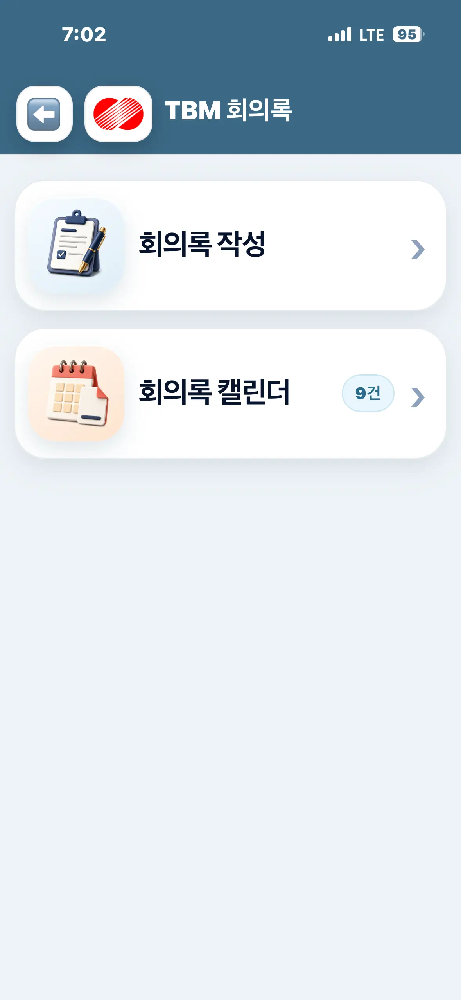
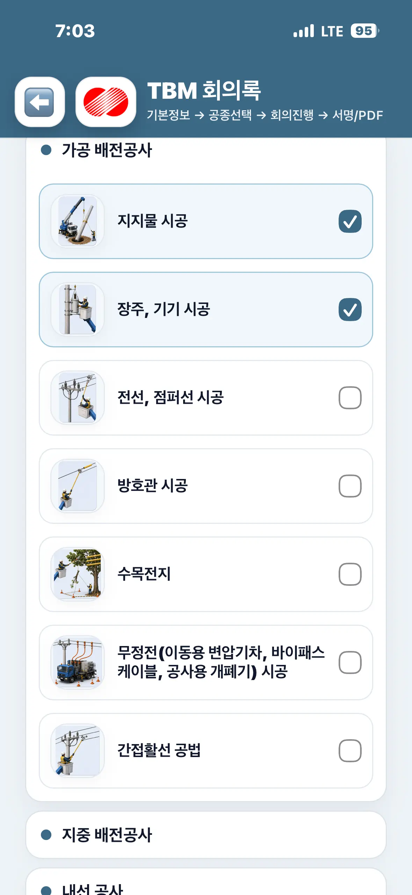
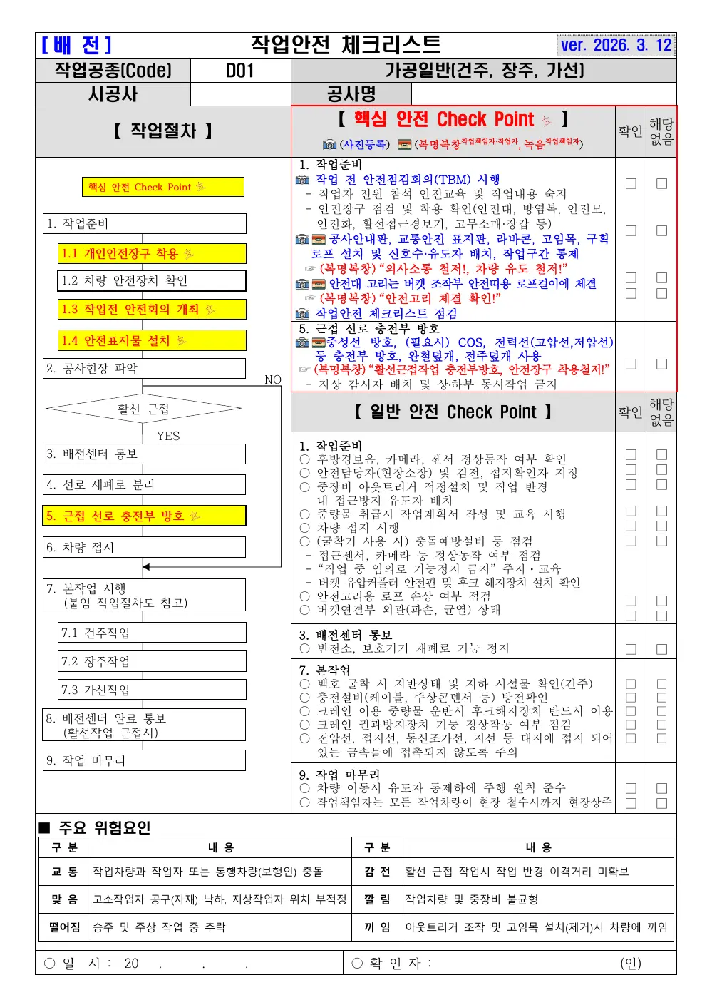
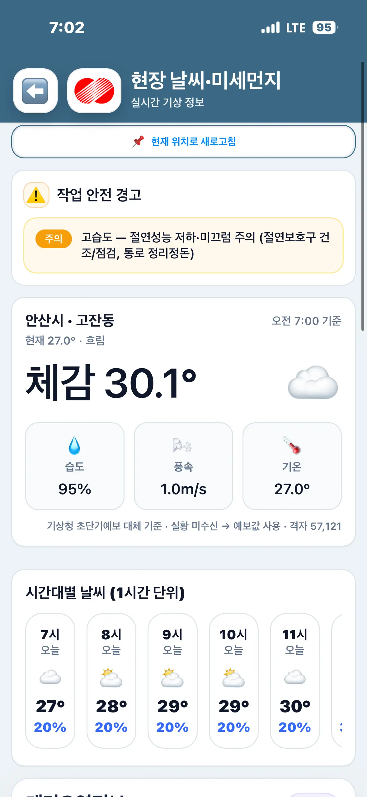
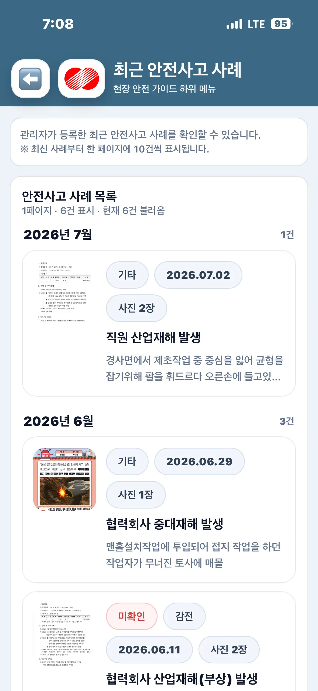
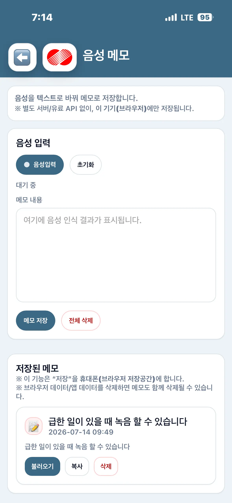
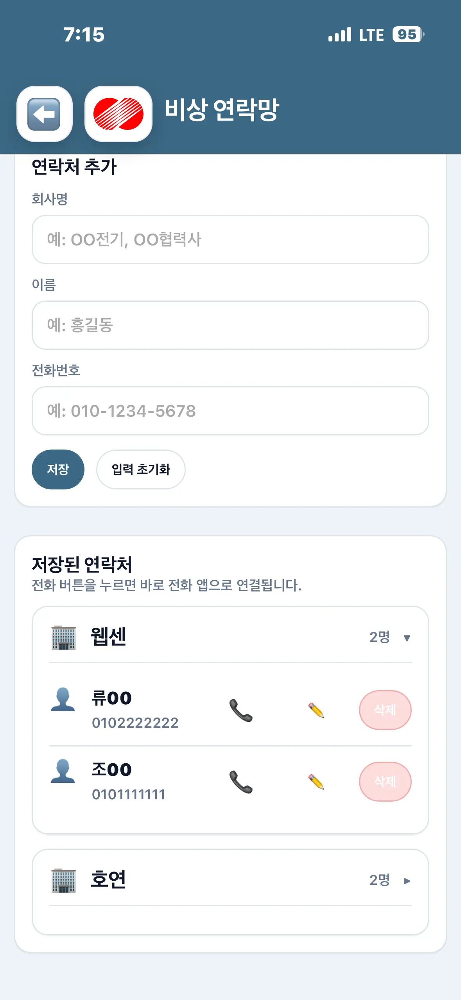
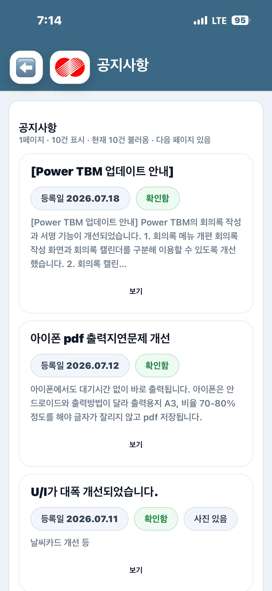
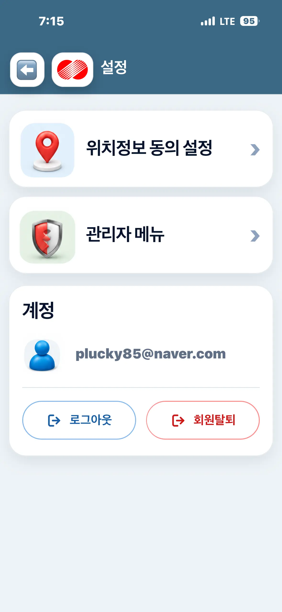
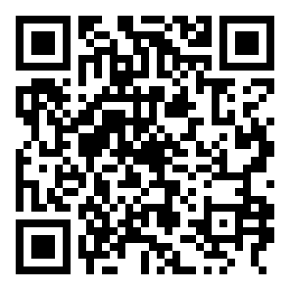

최초 1회
위치정보 동의
날씨·거리뷰·응급시설을 사용하려면 앱 동의 후 브라우저 위치 권한을 허용합니다.
Power TBM은 공종, 작업자, 기상, 사고사례를 함께 검토하고 회의록과 작업안전 체크리스트를 전자문서로 남기는 모바일 현장 안전 플랫폼입니다.
현장 도착부터 회의록 보관까지 6단계입니다. 각 단계의 필수 확인사항을 마치면 다음 화면으로 이어집니다.
날씨·거리뷰·응급시설을 사용하려면 앱 동의 후 브라우저 위치 권한을 허용합니다.
홈에서 TBM 회의록을 누른 뒤 ‘회의록 작성’으로 들어갑니다.
공사명, 작업장소, 시공관리책임자와 작업자 정보를 확인합니다.
가공·지중·내선 공종을 복수 선택하면 관련 위험요인이 한 회의 흐름으로 정리됩니다.
건강상태, 보호구, 위험요인, 현장조치를 확인하고 AI 제안은 책임자가 검토해 반영합니다.
책임자와 작업자 서명을 받은 뒤 PDF를 확정하고 캘린더에서 날짜별로 관리합니다.
메뉴 이름보다 “무슨 일을 할 수 있는지”를 기준으로 정리했습니다.
기본정보, 복수 공종, 건강상태, 보호구, 위험요인, 현장조치를 순서대로 확인하고 하나의 회의록으로 완성합니다.


선택 공종에 기상, 유사사고, 작업자 상태를 더해 놓치기 쉬운 위험요인과 안전대책을 제안합니다.
배전분야 공종별 원문 양식을 모바일에서 확인하고 핵심·일반 안전항목, 확인자 서명과 작성일시를 전자문서로 남깁니다.

공종별 원문 양식현재 위치의 체감온도, 습도, 풍속, 시간대별 예보와 특보 조치사항을 한 화면에서 확인합니다.

현장에서 다시 확인해야 할 안전수칙과 관리자가 등록한 최근 사고사례를 유형·발생일과 함께 조회합니다.

별도 앱을 찾아다니지 않도록 공지, 음성메모, 거리뷰, 응급의료시설, 비상연락망을 현장 메뉴에 모았습니다.


입력·확인·판단·기록의 책임이 섞이지 않도록 단계별 목적을 분명하게 나눴습니다.
공사명, 장소, 책임자, 작업자를 확인합니다.
완료 기준당일 참석자와 역할이 정확함실제 수행할 공종만 선택해 위험요인을 구성합니다.
완료 기준작업범위와 선택 공종이 일치함건강, 보호구, 현장조치와 AI 제안을 함께 검토합니다.
완료 기준책임자가 반영 내용을 최종 확정함참석자의 서명을 완료하고 원본 문서를 저장합니다.
완료 기준서명 상태와 PDF 내용을 재확인함아래 메뉴를 선택하면 화면에서 무엇을 확인하고 언제 사용하는지 설명해 드립니다.
현재 날씨와 기상특보를 먼저 확인한 뒤 TBM 회의록, 안전가이드, 현장도구로 이동합니다.
특보 카드의 펼치기 버튼을 누르면 산업분야 조치사항을 바로 볼 수 있습니다.
AI가 제안한 내용은 자동 확정되지 않습니다. 현장 책임자가 실제 작업조건과 대조해 최종 반영합니다.
급박한 위험이나 작업조건 변화가 있으면 문서 작성보다 작업중지와 현장 안전조치를 먼저 시행합니다.
날씨·거리뷰·응급시설에 필요한 경우에만 동의하며, 브라우저 위치 권한은 별도로 허용하거나 거부할 수 있습니다.
서명자, 위험요인, 현장조치가 정확한지 확인한 뒤 PDF 원본을 확정하고 캘린더에 보관합니다.
작업자 변경, 공종 추가, 기상 악화 등 조건이 바뀌면 해당 내용을 다시 확인하고 회의에 반영합니다.
공지 확인, 전달사항 메모, 비상연락과 위치기반 도구까지 안전회의 전후에 필요한 기능을 한곳에 모았습니다.


아닙니다. AI는 선택 공종과 현장정보를 바탕으로 추가 위험요인과 안전대책을 제안합니다. 실제 반영 여부와 최종 회의 내용은 현장 책임자가 확인해 결정합니다.
가능합니다. 당일 함께 수행하는 공종을 복수 선택하면 관련 위험요인을 한 회의 흐름으로 모아 확인할 수 있습니다.
현장에서 직접 서명하거나, 통신이 가능한 경우 카카오톡 링크와 QR을 이용해 원격으로 서명할 수 있습니다. PDF 확정 전 서명 상태를 반드시 확인하세요.
TBM 회의록의 ‘회의록 캘린더’에서 날짜별 문서를 확인할 수 있습니다. 필요한 기간을 선택해 여러 문서를 ZIP으로 묶어 관리할 수도 있습니다.
회의록 등 위치와 무관한 기능은 사용할 수 있습니다. 다만 현재 위치 기준 날씨, 거리뷰, 주변 응급의료시설처럼 위치가 필요한 기능은 제한됩니다.
네. 공종별 원문 양식에 확인 결과와 서명을 반영해 PDF로 저장하고, 임시저장 또는 완료 문서 캘린더에서 관리할 수 있습니다.
앱의 정체성과 현장 안전의 흐름을 짧은 인트로 영상으로 확인할 수 있습니다.

모바일로 바로 열기 카메라로 QR코드를 스캔하세요